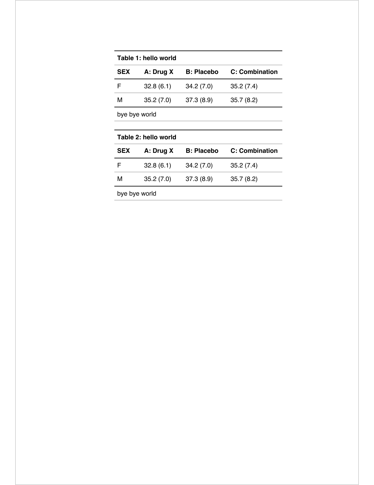
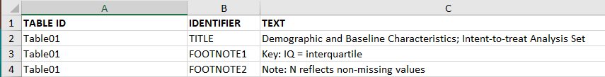

Chapter 3 Formatting and Rendering Tables
Table generation usually is a two step process
- Derive the cell value and tabulate them.
- Create the final table output, save it to a file to be shared with collaborators.
Chapter Commonly Used Tables focuses on the work involved in step 1. In this chapter we
discuss the various aspects of creating the final output that is commonly stored
in a file with a particular file format (pdf, txt, html, docx or rtf).
3.1 Title & Footnotes
Commonly rendered tables that are reported to the health authorities have titles and footnotes with information such as:
- what is summarized in the table
- database lock date
- patient sub-population
- notes by study team
- notes regarding statistical algorithms chosen
- provenance information including path to program and when the table was created
Often footnotes include cell references.
3.1.1 gt
The gt package lets you add a title and even a subtitle and preheader lines (for RTF)
with its tab_header() function. In the following example, we create some sample_data and feed
that into the gt() function. We can automatically create a table stub (for row labels) and
row groups with the rowname_col and groupname_col arguments of gt().
Code
resetSession()
library(gt)
sample_data <-
dplyr::tibble(
label = c("n", "Mean (SD)", "Median", "Min - Max", "F", "M", "U", "UNDIFFERENTIATED"),
`val_A: Drug X` = c(134, 33.8, 33, NA, 79, 51, 3, 1),
`val_B: Placebo` = c(134, 35.4, 35, NA, 77, 55, 2, 0),
`val_C: Combination` = c(132, 35.4, 35, NA, 66, 60, 4, 2),
category = c(rep("Age (Years)", 4), rep("Sex, n (%)", 4))
)
gt_tbl <-
gt(
sample_data,
rowname_col = "label",
groupname_col = "category"
) |>
tab_header(
title = "x.x: Study Subject Data",
subtitle = md(
"x.x.x: Demographic Characteristics \n Table x.x.x.x: Demographic
Characteristics - Full Analysis Set"
),
preheader = c("Protocol: XXXXX", "Cutoff date: DDMMYYYY")
) |>
tab_source_note("Source: ADSL DDMMYYYY hh:mm; Listing x.xx; SDTM package: DDMMYYYY") |>
sub_missing(missing_text = "") |>
tab_options(
page.orientation = "landscape",
page.numbering = TRUE,
page.header.use_tbl_headings = TRUE,
page.footer.use_tbl_notes = TRUE
)
gt_tbl| x.x: Study Subject Data | |||
| x.x.x: Demographic Characteristics Table x.x.x.x: Demographic Characteristics - Full Analysis Set |
|||
| val_A: Drug X | val_B: Placebo | val_C: Combination | |
|---|---|---|---|
| Age (Years) | |||
| n | 134.0 | 134.0 | 132.0 |
| Mean (SD) | 33.8 | 35.4 | 35.4 |
| Median | 33.0 | 35.0 | 35.0 |
| Min - Max | |||
| Sex, n (%) | |||
| F | 79.0 | 77.0 | 66.0 |
| M | 51.0 | 55.0 | 60.0 |
| U | 3.0 | 2.0 | 4.0 |
| UNDIFFERENTIATED | 1.0 | 0.0 | 2.0 |
| Source: ADSL DDMMYYYY hh:mm; Listing x.xx; SDTM package: DDMMYYYY | |||
The above example contains the use of the tab_source_note() function. You can create as
many source notes in the table footer as you need, and they typically describe the data table as
a whole (i.e., not pointing to anything specific). For that, you can use footnotes and target
cells that require additional explanation. Here’s an example of that using tab_footnote():
Code
| x.x: Study Subject Data | |||
| x.x.x: Demographic Characteristics Table x.x.x.x: Demographic Characteristics - Full Analysis Set |
|||
| val_A: Drug X | val_B: Placebo | val_C: Combination1 | |
|---|---|---|---|
| Age (Years) | |||
| n | 2 134.0 | 2 134.0 | 132.0 |
| Mean (SD) | 33.8 | 35.4 | 35.4 |
| Median | 33.0 | 35.0 | 35.0 |
| Min - Max | |||
| Sex, n (%) | |||
| F | 79.0 | 77.0 | 66.0 |
| M | 51.0 | 55.0 | 60.0 |
| U | 3.0 | 2.0 | 4.0 |
| UNDIFFERENTIATED | 1.0 | 0.0 | 2.0 |
| Source: ADSL DDMMYYYY hh:mm; Listing x.xx; SDTM package: DDMMYYYY | |||
| 1 This is the combination of the two. | |||
| 2 These values are the same. | |||
The tab_footnote() function allows for footnotes to be placed anywhere in the table (using
the cells_*() helper functions for targeting). Targeting columns, rows, or other
locations can be done with Tidyselect-style helper functions (e.g., matches(), starts_with(),
etc.), ID values, or indices.
As a final note on the first example, we can specify certain page.* options that make RTF
output ideal for regulatory filing purposes. The options employed above in the tab_options()
call ensure that pages are in landscape orientation, page numbering for each table is activated,
and that page header and footer are used for the table’s headings and footer elements.
3.1.2 rtables
The basic_table() function in rtables has the arguments titles, subtitles,
main_footer, prov_footer to add titles and footnotes to tables. rtables
also supports referential footnotes.
So for example a basic demographics table created with rtables via tern with title and footnotes would look as follows:
Code
Demographic Table - All Patients
Cutoff Date: June 01, 2022
Arm B received a placebo.
————————————————————————————————————————————————
A: Drug X B: Placebo C: Combination
————————————————————————————————————————————————
AGE
Mean 33.77 35.43 35.43
SEX
F 79 82 70
M 55 52 62
————————————————————————————————————————————————
Missing data is omitted.3.1.3 flextable
Titles and notes can be added and formatted with the flextable package. It is possible to add them in the header and in the footer. Several methods are possible but for most needs, the add_header_lines() and add_footer_lines() functions will be the easiest to use.
Let’s create first a flextable from an aggregation that will be used to illustrate the features.
Code
SEX | A: Drug X | B: Placebo | C: Combination | |||
|---|---|---|---|---|---|---|
F | 32.8 (6.1) | 34.2 (7.0) | 35.2 (7.4) | |||
M | 35.2 (7.0) | 37.3 (8.9) | 35.7 (8.2) |
The following shows how to add titles or notes:
hello world | ||||||
|---|---|---|---|---|---|---|
SEX | A: Drug X | B: Placebo | C: Combination | |||
F | 32.8 (6.1) | 34.2 (7.0) | 35.2 (7.4) | |||
M | 35.2 (7.0) | 37.3 (8.9) | 35.7 (8.2) | |||
bye bye world | ||||||
For Word output, users can prepend a table number that will auto-incremente.
Code
docx_file <- "reports/flextable-title-01.docx"
ft <- add_header_lines(z, "hello world") |>
prepend_chunks(
i = 1, j = 1, part = "header",
as_chunk("Table "), as_word_field("SEQ tab \u005C* Arabic"),
as_chunk(": ")) |>
add_footer_lines("bye bye world") |>
theme_vanilla()
save_as_docx(ft, ft, path = docx_file)
Footnotes are also available in flextable with function footnote().
The function lets users add footnotes and references to it on the table.
Code
SEX | A: Drug X | B: Placebo | C: Combination | |||
|---|---|---|---|---|---|---|
F(1) | 32.8 (6.1) | 34.2 (7.0) | 35.2 (7.4) | |||
M | 35.2 (7.0) | 37.3 (8.9)(1) | 35.7 (8.2)(1) | |||
(1)hello world | ||||||
3.1.4 tfrmt
The tfrmt() function in the tfrmt package includes the arguments title and
subtitle to add titles. Within the footnote_plan() function, the user can nest
multiple footnote_structures to add footnotes with superscript reference
symbols on groups, columns or labels.
To demonstrate, this example will create a mock demographics table:
Code
resetSession()
library(tfrmt)
library(dplyr)
library(tidyr)
# Create mock data
df <- crossing(group = c("AGE", "SEX"),
label = c("label 1", "label 2"),
column = c("Drug X", "Placebo", "Combination"),
param = c("count", "percent"))
# Create specification
tfrmt_spec <- tfrmt(
# Add titles
title = "Demographic Table - All Patients",
subtitle = "Cutoff Date: June 01, 2022. Arm B received a placebo.",
# Specify table features
group = group,
label = label,
column = column,
param = param,
row_grp_plan = row_grp_plan(
row_grp_structure(group_val = ".default",
element_block(post_space = " ")) ),
# Define cell formatting
body_plan = body_plan(
frmt_structure(group_val = ".default", label_val = ".default",
frmt_combine("{count} ({percent})",
count = frmt("xx"),
percent = frmt("xx.x")))),
# Add footnotes here
footnote_plan = footnote_plan(
footnote_structure(footnote_text = "Footnote about column", column_val = "Combination"),
footnote_structure(footnote_text = "Footnote about group", group_val = "AGE"),
marks = "numbers"),
)
print_mock_gt(tfrmt_spec, df)| Demographic Table - All Patients | |||
| Cutoff Date: June 01, 2022. Arm B received a placebo. | |||
| Combination1 | Drug X | Placebo | |
|---|---|---|---|
| AGE2 | |||
| label 1 | xx (xx.x) | xx (xx.x) | xx (xx.x) |
| label 2 | xx (xx.x) | xx (xx.x) | xx (xx.x) |
| SEX | |||
| label 1 | xx (xx.x) | xx (xx.x) | xx (xx.x) |
| label 2 | xx (xx.x) | xx (xx.x) | xx (xx.x) |
| 1 Footnote about column | |||
| 2 Footnote about group | |||
See this vignette for more details on footnotes: link to website
3.1.5 tables
The tables package concentrates on the table itself. The titles are generally written as part of the surrounding document. Footnotes would be added after constructing the table by modifying individual entries.
Alternatively for HTML output, only the footnote
markers need to be added by modifying entries, and then
the footnotes can be applied by using toHTML(tab, options = list(doFooter = TRUE, HTMLfooter = HTMLfootnotes(...)).
Code
resetSession()
adsl <- cadsl
library(tables)
table_options(doCSS = TRUE)
sd_in_parens <- function(x) sprintf("(%.1f)", sd(x))
tab <- tabular(SEX ~ Heading()*ARM*
Heading()*AGE*
Heading()*(mean + sd_in_parens),
data = adsl)
rowLabels(tab)[1,1] <- paste(rowLabels(tab)[1,1], "<sup>a</sup>")
tab[2,2] <- sprintf("%s%s", tab[2,2], "<sup>b</sup>")
tab[2,3] <- sprintf("%.2f%s", tab[2,3], "<sup>b</sup>")
footnotes <- HTMLfootnotes(tab, a = "This is a label footnote.",
b = "These are cell footnotes.")
toHTML(tab, options = list(HTMLfooter = footnotes,
doFooter = TRUE))| SEX | A: Drug X | B: Placebo | C: Combination | |||
|---|---|---|---|---|---|---|
| aThis is a label footnote. bThese are cell footnotes. | ||||||
| F a | 32.76 | (6.1) | 34.24 | (7.0) | 35.20 | (7.4) |
| M | 35.22 | (7.0)b | 37.31b | (8.9) | 35.69 | (8.2) |
3.1.6 tidytlg
The gentlg() function in the tidytlg package includes the title argument for
adding title and the footers argument for adding footnotes to the table output.
Users can include a vector of character strings for multiple lines of footnotes
(please see an example below). At the bottom line of the footnotes, the file name
of the table and the path of the table program along with the datetime stamp are automatically created.
Code
resetSession()
library(dplyr)
library(tidytlg)
adsl <- formatters::ex_adsl
# create analysis set row
t1 <- freq(adsl,
rowvar = "ITTFL",
colvar = "ARM",
statlist = statlist("n"),
subset = ITTFL == "Y",
rowtext = "Analysis set: ITT")
# create univariate stats for age
t2 <- univar(adsl,
rowvar = "AGE",
colvar = "ARM",
statlist = statlist(c("N", "MEANSD", "MEDIAN", "RANGE", "IQRANGE")),
row_header = "Age (years)",
decimal = 0)
tbl <- bind_table(t1, t2)
# assign table id
tblid <- "Table01"
# output the analysis results
gentlg(huxme = tbl,
format = "HTML",
print.hux = FALSE,
file = tblid,
orientation = "portrait",
title = "Demographic and Baseline Characteristics; Intent-to-treat Analysis Set",
footers = c("Key: IQ = Interquartile","Note: N reflects non-missing values"),
colheader = c("","A: Drug X","B: Placebo","C: Combination")) Table01: Demographic and Baseline Characteristics; Intent-to-treat Analysis Set | |||
A: Drug X | B: Placebo | C: Combination | |
|---|---|---|---|
Analysis set: ITT | 134 | 134 | 132 |
Age (years) | |||
N | 134 | 134 | 132 |
Mean (SD) | 33.8 (6.55) | 35.4 (7.90) | 35.4 (7.72) |
Median | 33.0 | 35.0 | 35.0 |
Range | (21; 50) | (21; 62) | (20; 69) |
IQ range | (28.0; 39.0) | (30.0; 40.0) | (30.0; 40.0) |
Key: IQ = Interquartile | |||
| Note: N reflects non-missing values | |||
[table01.html][/home/runner/work/_temp/06b1d67f-27cd-428c-b40a-7c5d805e713d] 06JUN2024, 16:09 | |||
To programmatically incorporate titles and footnotes into each table program, users can create an excel file called titles.xls (see below snapshot) with the columns of "TABLE ID","IDENTIFIER","TEXT". In the gentlg() function call, users just need to provide the argument of title_file for specifying the location of titles.xls. Then the title and footnotes corresponding to the table ID will be automatically included in the table output. Users need to make sure the correct table ID is used for the file argument of the gentlg() function call.

3.2 Captions
A caption is a single paragraph of text describing the table. Captions are often used because they allow you to cross-reference tables or list them in a ‘list of tables’ with the corresponding page numbers.
3.2.1 flextable
The set_caption() function in flextable is the recommended way to add
captions.
Code
speed | dist |
|---|---|
4 | 2 |
4 | 10 |
7 | 4 |
7 | 22 |
8 | 16 |
9 | 10 |
In bookdown, use the syntax \@ref(tab:flextable-label) to create a linked
reference to the table. Here is an example of a reference: ??.
With Quarto, the R chunk code should be transformed as:
3.3 Pagination
Historically tables have been printed to paper for submissions. Hence large tables that would not fit onto a single printed page (e.g. letter & portrait) would have to be split into multiple tables that can be printed to the preferred page size. This process of splitting the table is called pagination of tables.
Pagination of complex structured tables is complicated by the fact that some rows of such tables require contextual information – e.g., any group labels or summaries they fall under – to be fully understood. This means that any such context must be repeated after a page break for that page to be understood in isolation.
3.3.1 rtables
rtables supports context-preserving pagination in both the
horizontal and vertical directions (via the interface provided by
formatters) via calling paginate_table() directly, and within the
export_as_* rendering functions. Users specify page dimensions (in
either inches, or lines long and characters wide) and font information
and the pagination and export machinery paginates the table such that
each portion will fit fully on its page when rendered as text,
including title, footer, and referential footnote materials.
For vertical pagination, summary rows (whether label rows, or so-called content rows containing summary values) are repeated after page breaks to preserve context on the following page. We see this in action below when pagination occurs within the strtata B - ASIAN facet of the the following table
Code
resetSession()
library(rtables)
lyt <- basic_table(title = "main title", subtitles = "subtitle", main_footer = "main footer", prov_footer = "provenance footer") |>
split_cols_by("ARM") |>
split_cols_by("SEX", split_fun = keep_split_levels(c("F", "M"))) |>
split_rows_by("STRATA1", split_fun = keep_split_levels(c("A", "B"))) |>
split_rows_by("RACE", split_fun = keep_split_levels(c("ASIAN", "WHITE"))) |>
summarize_row_groups() |>
analyze("AGE", afun = function(x, ...) in_rows("mean (sd)" = rcell(c(mean(x), sd(x)), format = "xx.x (xx.x)"),
"range" = rcell(range(x), format = "xx.x - xx.x")))
tbl <- build_table(lyt, ex_adsl)
tblmain title
subtitle
—————————————————————————————————————————————————————————————————————————————————————————————————
A: Drug X B: Placebo C: Combination
F M F M F M
—————————————————————————————————————————————————————————————————————————————————————————————————
A
ASIAN 11 (13.9%) 10 (19.6%) 14 (18.2%) 10 (18.2%) 11 (16.7%) 7 (11.7%)
mean (sd) 29.0 (3.9) 35.0 (6.1) 31.1 (5.5) 40.9 (10.3) 33.7 (4.0) 37.0 (5.9)
range 24.0 - 35.0 28.0 - 43.0 23.0 - 46.0 27.0 - 62.0 28.0 - 40.0 28.0 - 47.0
WHITE 5 (6.3%) 3 (5.9%) 3 (3.9%) 3 (5.5%) 3 (4.5%) 5 (8.3%)
mean (sd) 34.4 (2.9) 35.3 (8.5) 33.7 (2.9) 38.7 (10.3) 29.7 (6.1) 32.2 (7.7)
range 30.0 - 37.0 29.0 - 45.0 32.0 - 37.0 30.0 - 50.0 23.0 - 35.0 25.0 - 45.0
B
ASIAN 11 (13.9%) 9 (17.6%) 15 (19.5%) 7 (12.7%) 11 (16.7%) 14 (23.3%)
mean (sd) 29.5 (5.7) 35.3 (7.1) 38.7 (10.0) 37.6 (10.6) 41.5 (9.6) 36.1 (7.5)
range 23.0 - 40.0 27.0 - 48.0 26.0 - 58.0 26.0 - 58.0 32.0 - 64.0 25.0 - 48.0
WHITE 5 (6.3%) 4 (7.8%) 8 (10.4%) 4 (7.3%) 5 (7.6%) 2 (3.3%)
mean (sd) 35.0 (3.4) 39.0 (11.2) 32.2 (5.3) 33.0 (9.8) 33.4 (6.5) 29.0 (4.2)
range 31.0 - 39.0 24.0 - 48.0 26.0 - 42.0 21.0 - 42.0 28.0 - 44.0 26.0 - 32.0
—————————————————————————————————————————————————————————————————————————————————————————————————
main footer
provenance footerpaginate_table(), then, breaks our table into subtables – including repeated context where appropriate – which will fit on physical pages (we use 5.2 x 3.5 inch “pages” for illustrative purposes here):
[[1]]
main title
subtitle
———————————————————————————————————————————————————————
A: Drug X B: Placebo
F M F
———————————————————————————————————————————————————————
A
ASIAN 11 (13.9%) 10 (19.6%) 14 (18.2%)
mean (sd) 29.0 (3.9) 35.0 (6.1) 31.1 (5.5)
range 24.0 - 35.0 28.0 - 43.0 23.0 - 46.0
WHITE 5 (6.3%) 3 (5.9%) 3 (3.9%)
mean (sd) 34.4 (2.9) 35.3 (8.5) 33.7 (2.9)
range 30.0 - 37.0 29.0 - 45.0 32.0 - 37.0
B
ASIAN 11 (13.9%) 9 (17.6%) 15 (19.5%)
mean (sd) 29.5 (5.7) 35.3 (7.1) 38.7 (10.0)
———————————————————————————————————————————————————————
main footer
provenance footer
[[2]]
main title
subtitle
———————————————————————————————————————————————————————
B: Placebo C: Combination
M F M
———————————————————————————————————————————————————————
A
ASIAN 10 (18.2%) 11 (16.7%) 7 (11.7%)
mean (sd) 40.9 (10.3) 33.7 (4.0) 37.0 (5.9)
range 27.0 - 62.0 28.0 - 40.0 28.0 - 47.0
WHITE 3 (5.5%) 3 (4.5%) 5 (8.3%)
mean (sd) 38.7 (10.3) 29.7 (6.1) 32.2 (7.7)
range 30.0 - 50.0 23.0 - 35.0 25.0 - 45.0
B
ASIAN 7 (12.7%) 11 (16.7%) 14 (23.3%)
mean (sd) 37.6 (10.6) 41.5 (9.6) 36.1 (7.5)
———————————————————————————————————————————————————————
main footer
provenance footer
[[3]]
main title
subtitle
———————————————————————————————————————————————————————
A: Drug X B: Placebo
F M F
———————————————————————————————————————————————————————
B
ASIAN 11 (13.9%) 9 (17.6%) 15 (19.5%)
range 23.0 - 40.0 27.0 - 48.0 26.0 - 58.0
WHITE 5 (6.3%) 4 (7.8%) 8 (10.4%)
mean (sd) 35.0 (3.4) 39.0 (11.2) 32.2 (5.3)
range 31.0 - 39.0 24.0 - 48.0 26.0 - 42.0
———————————————————————————————————————————————————————
main footer
provenance footer
[[4]]
main title
subtitle
———————————————————————————————————————————————————————
B: Placebo C: Combination
M F M
———————————————————————————————————————————————————————
B
ASIAN 7 (12.7%) 11 (16.7%) 14 (23.3%)
range 26.0 - 58.0 32.0 - 64.0 25.0 - 48.0
WHITE 4 (7.3%) 5 (7.6%) 2 (3.3%)
mean (sd) 33.0 (9.8) 33.4 (6.5) 29.0 (4.2)
range 21.0 - 42.0 28.0 - 44.0 26.0 - 32.0
———————————————————————————————————————————————————————
main footer
provenance footerrtables also supports page-by splits in its layouting framework, which declares that – regardless of rendering dimensions – pagination should occur between distinct levels of a variable. Each of these “pagination sections” have an additional title specific to the level, and are independently paginated for dimension as needed.
Code
lyt2 <- basic_table(title = "main title", subtitles = "subtitle", main_footer = "main footer", prov_footer = "provenance footer") |>
split_cols_by("ARM") |>
split_rows_by("STRATA1", split_fun = keep_split_levels(c("A", "B")), page_by = TRUE, page_prefix = "Stratum") |>
split_rows_by("RACE", split_fun = keep_split_levels(c("ASIAN", "WHITE"))) |>
summarize_row_groups() |>
analyze("AGE", afun = function(x, ...) in_rows("mean (sd)" = rcell(c(mean(x), sd(x)), format = "xx.x (xx.x)"),
"range" = rcell(range(x), format = "xx.x - xx.x")))
tbl2 <- build_table(lyt2, ex_adsl)
paginate_table(tbl2, lpp = 16)$A1
main title
subtitle
Stratum: A
————————————————————————————————————————————————————————
A: Drug X B: Placebo C: Combination
————————————————————————————————————————————————————————
ASIAN 22 (16.4%) 24 (17.9%) 19 (14.4%)
mean (sd) 31.9 (5.7) 35.2 (9.1) 35.2 (4.8)
range 24.0 - 43.0 23.0 - 62.0 28.0 - 47.0
————————————————————————————————————————————————————————
main footer
provenance footer
$A2
main title
subtitle
Stratum: A
————————————————————————————————————————————————————————
A: Drug X B: Placebo C: Combination
————————————————————————————————————————————————————————
WHITE 8 (6.0%) 7 (5.2%) 8 (6.1%)
mean (sd) 34.8 (5.1) 34.9 (7.5) 31.2 (6.8)
range 29.0 - 45.0 27.0 - 50.0 23.0 - 45.0
————————————————————————————————————————————————————————
main footer
provenance footer
$B1
main title
subtitle
Stratum: B
————————————————————————————————————————————————————————
A: Drug X B: Placebo C: Combination
————————————————————————————————————————————————————————
ASIAN 20 (14.9%) 23 (17.2%) 25 (18.9%)
mean (sd) 32.1 (6.9) 38.2 (9.8) 38.4 (8.8)
range 23.0 - 48.0 26.0 - 58.0 25.0 - 64.0
————————————————————————————————————————————————————————
main footer
provenance footer
$B2
main title
subtitle
Stratum: B
————————————————————————————————————————————————————————
A: Drug X B: Placebo C: Combination
————————————————————————————————————————————————————————
WHITE 10 (7.5%) 12 (9.0%) 7 (5.3%)
mean (sd) 35.9 (7.6) 32.5 (6.7) 32.1 (6.0)
range 24.0 - 48.0 21.0 - 42.0 26.0 - 44.0
————————————————————————————————————————————————————————
main footer
provenance footer3.3.2 flextable
The pagination of flextable objects let user control their position in relation to page breaks. It can prevent breaks between tables rows of a same group.
Function paginate() let you define this pagination, this feature is only
available for RTF and Word outputs; see the documentation about pagination.
3.4 Rendering Tables
The choice of output format is often dictated by your company’s processes to include the tables in a report. The packages discussed in this book vary in regard to which output formats are supported natively. The following table shows the current output capabilities for each package.
| ASCII | HTML | .docx | RTF | .pptx | grid | ||
|---|---|---|---|---|---|---|---|
| flextable | ✓ | ✓ | ✓ | ✓ | ✓ | ✓ | |
| gt | ✓ | ✓ | ✓ | ✓ | |||
| rtables | ✓ | ✓ | ✓ | ✓ | ✓ | ✓ | ✓ |
| tables | ✓ | ✓ | ✓ | ||||
| tfrmt | ✓ | ✓ | ✓ | ✓ | |||
| tidytlg | ✓ | ✓ |
If the format you need is not supported by the package you would like to use, there are still options. For example, tables produced in rtables and tables can be converted to flextable objects, giving access to the other output formats. Pandoc (MacFarlane 2023) is another option: it can convert documents between a wide range of document formats.